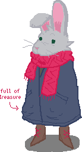
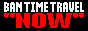
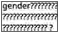
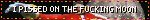
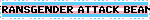

about me!
[javascript broke. oh no]

hi! i'm the webmaster!
- name(s): june (and any variation thereof), tz
- pronouns: she and they
- likes: pixels (crunchy!), video game osts, the color yellow, the fact that birds exist, a hot cuppa tea, doodling, vibrant splashes of color, em dashes
- interests: homestuck, deltarune, 17776, taz sometimes
- things you should know about me:
- i almost died once by drinking detergent tea
- i drew all the art you see on here with a trackpad
- i have 100%'d celeste (very proud)
- except the golden strawberries they don't contribute to achievement progress anyway and im not doing them because they're stypid little fucking
- heir of space prospit dreamer








![You are steelblue. Your dominant hues are cyan and blue. You like people and enjoy making friends. You're conservative and like to make sure things make sense before you step into them, especially in relationships. You are curious but respected for your opinions by people who you sometimes wouldn't even suspect. Your saturation level is medium - You're not the most decisive go-getter, but you can get a job done when it's required of you. You probably don't think the world can change for you and don't want to spend too much effort trying to force it. Your outlook on life is brighter than most people's. You like the idea of influencing things for the better and find hope in situations where others might give up. You're not exactly a bouncy sunshine but things in your world generally look up.](../assets/steelblue.png)